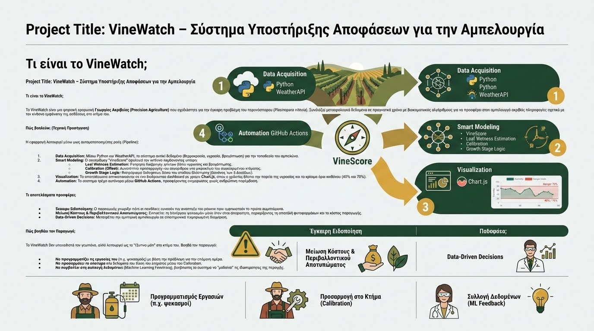
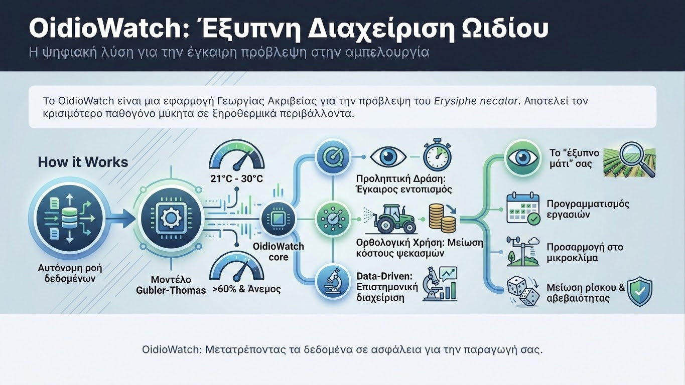
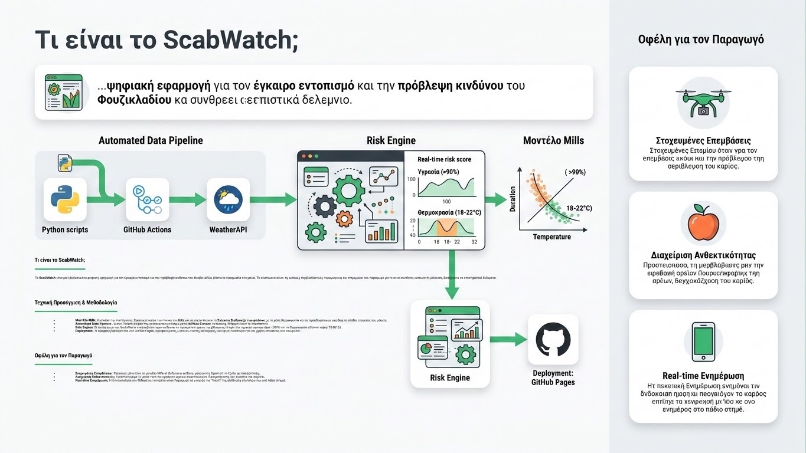

Project
VineWatch – Σύστημα Υποστήριξης Αποφάσεων
Ψηφιακή εφαρμογή Γεωργίας Ακριβείας που συνδυάζει Python, Weather APIs και GitHub Actions για την έγκαιρη πρόβλεψη του περονόσπορου στα αμπέλια...
Δείτε το Project
Ψηφιακή εφαρμογή Γεωργίας Ακριβείας που συνδυάζει Python, Weather APIs και GitHub Actions για την έγκαιρη πρόβλεψη του περονόσπορου στα αμπέλια...
Δείτε το Project
Αλγόριθμος πρόβλεψης Ωιδίου βασισμένος στο μοντέλο Gubler-Thomas για την προστασία του αμπελώνα σε ξηροθερμικές συνθήκες.
Δείτε το Project
Το σύστημα βασίζεται στον Πίνακα του Mills, συσχετίζοντας τη διάρκεια διαβροχής των φύλλων με τη μέση θερμοκρασία για τον υπολογισμό της περιόδου επώασης του Venturia inaequalis.
Δείτε το Project
Σύστημα έγκαιρης προειδοποίησης για τον δάκο της ελιάς (Bactrocera oleae) βασισμένο στο μοντέλο Gonçalves & Torres (2011). Υπολογίζει βαθμοημέρες (Degree Days) και αξιολογεί τον κίνδυνο βάσει θερμοκρασίας και υγρασίας.
Δείτε το Project →
Διαδραστικό web εργαλείο για στιγμιαία δημιουργία QR κωδικών από οποιοδήποτε URL. Λειτουργεί εξ ολοκλήρου στον browser χωρίς server, με δυνατότητα λήψης σε PNG.
Δείτε το Project →Σκοπός της εργασίας αυτής είναι να διερευνηθεί η ανταγωνιστικότητα κλάδων διεθνώς εμπορεύσιμων γεωργικών προϊόντων της Ελλάδας για την περίοδο 1997 – 2010.
Διαβάστε την εργασίαΔημιουργία της ιστοσελίδας Mainalon Trekking σε Wordpress και δημιουργία περιεχομένου σε social media Youtube, Tik Tok και Instagram.
Δείτε το ProjectΒραβευμένο επιχειρηματικό σχέδιο για παραγωγή σαλάτας με υδροπονικό σύστημα και καινοτόμο μέθοδο συσκευασίας. Πρόκριση στα 15 κορυφαία επιχειρηματικά σχέδια.
Λεπτομέρειες